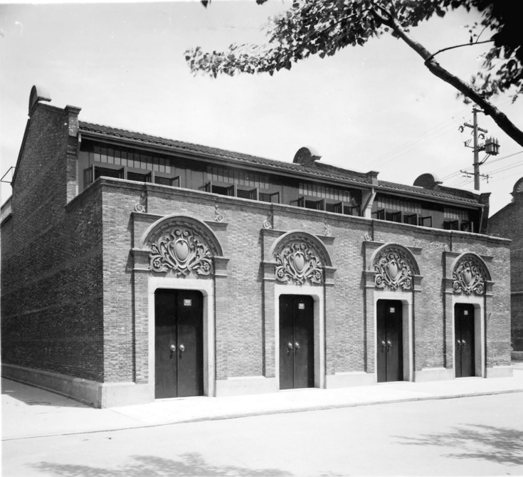
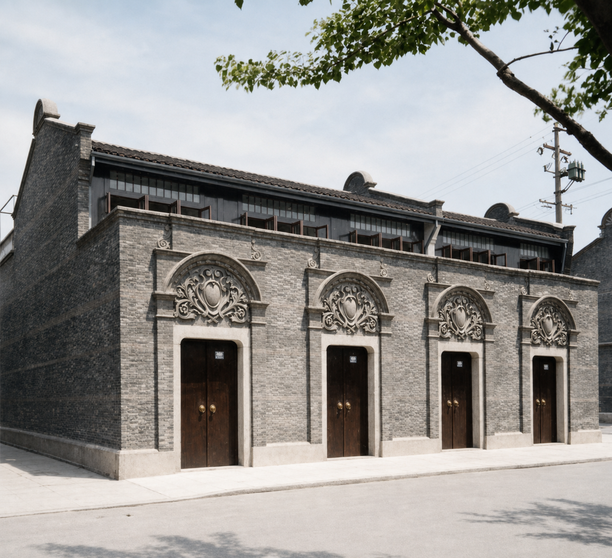
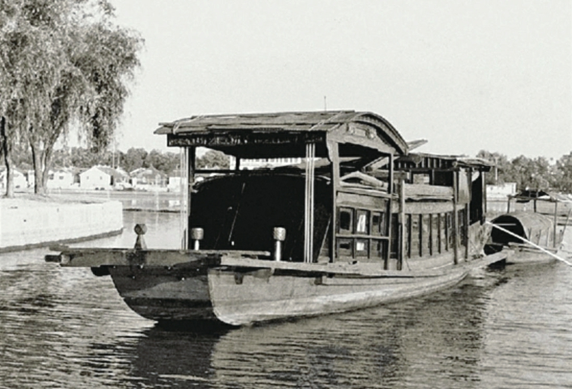
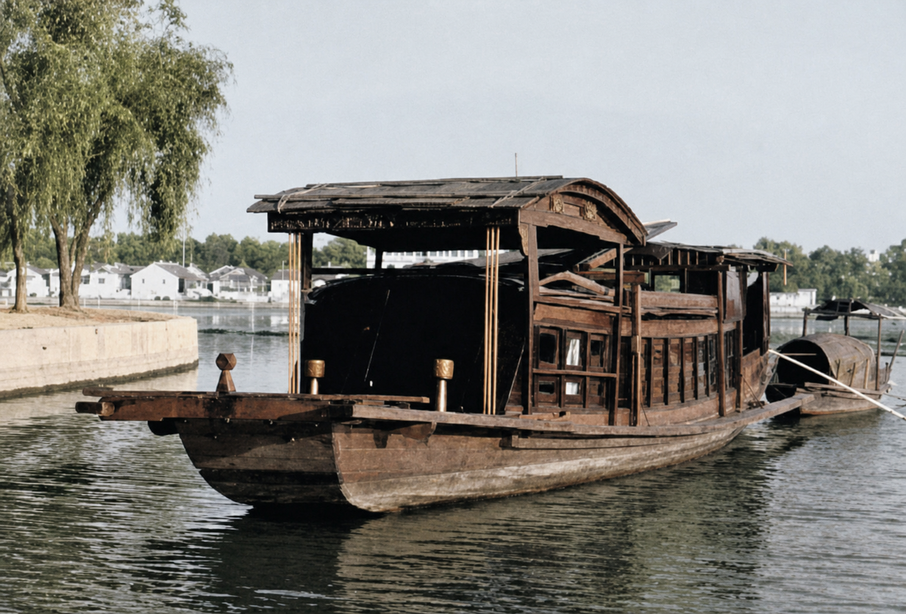

历史背景不是装饰，而是问题起点
近代中国在民族危机、社会危机和道路危机中不断探索。辛亥革命、新文化运动、五四运动、马克思主义传播和工人阶级登上政治舞台，共同构成中共一大召开的历史前提。
红色资源数字化作品
以中共一大会址与嘉兴南湖红船为核心案例，重构中国共产党诞生地的红色记忆，呈现红船精神的时代价值。
1921 年 7 月，中国共产党第一次全国代表大会在上海法租界望志路 106 号召开。会议后期因受到干扰，代表们转移到浙江嘉兴南湖，在一艘游船上继续完成会议议程。这一历史转折，使上海石库门与南湖红船共同成为中国共产党创建史上的重要地标。
本作品以“危机中的道路选择、秘密空间中的组织创建、湖上转移中的信念延续、红船精神的当代表达”为叙事线索。网页通过图像修复上色、时间线、知识图谱、语音导览和互动问答，把静态史料组织成可浏览、可聆听、可互动的数字展陈。
近代中国在民族危机、社会危机和道路危机中不断探索。辛亥革命、新文化运动、五四运动、马克思主义传播和工人阶级登上政治舞台，共同构成中共一大召开的历史前提。
石库门不是普通建筑背景，而是早期共产党组织从分散传播走向全国性政党整合的空间见证。这里讨论纲领、工作计划和中央机构，意味着理想开始转化为组织。
会议受到干扰后转移到南湖，叙事重点不是“地点变化”，而是政治意志没有被中断：会议继续完成纲领、决议和中央局等关键议程。
红船精神不是孤立口号，它来自建党实践：首创精神对应开辟新路，奋斗精神对应艰难环境中的坚持，奉献精神对应立党为公、忠诚为民的价值取向。
中共一大会址位于上海望志路 106 号，是中国共产党第一次全国代表大会最初召开的地点。石库门建筑本身并不宏大，却承载了一个新型政党从酝酿走向创建的历史瞬间。
会议后期转移至嘉兴南湖，在游船上继续完成议程。南湖红船由此成为中国革命源头的重要象征，也让“红船精神”获得了具象化载体。
共产党员网党史文章把一大放在更长的历史链条中理解：近代以来多种救国方案相继受挫，新文化运动打开思想解放空间，五四运动推动马克思主义传播并促使工人阶级以独立姿态登上政治舞台。由此看，中共一大不是突然出现的会议，而是思想传播、阶级基础、地方早期组织和国际共产主义运动影响共同汇合的结果。
南湖会议继续上海未完成的议程，讨论并通过《中国共产党第一个纲领》和《中国共产党第一个决议》，选举产生中央局。这意味着中国共产党从早期地方组织网络，进入具有纲领、纪律、工作方向和领导机构的全国性政党阶段。
本模块选取公开历史资料图进行 AI 辅助修复与上色。彩色图用于教学展示和历史想象辅助，不能替代原始史料；原始黑白照片仍是史料依据。


修复策略：保留石库门建筑结构、门窗比例和街道构图，只进行轻微去噪、清晰化和自然色彩补全，使观众更直观地感受旧址空间。


修复策略：保留船体、湖面、岸线和树木关系，补充木质船体、水面反光与岸边环境色彩，让“红船”从符号回到可感的历史场景。
老照片修复与上色可以提升观看体验，但色彩是算法依据纹理、语义和参考风格生成的“合理推断”，不是原始历史事实。因此本作品采用“双轨展示”：黑白图保留史料权威，上色图服务沉浸理解，并在页面中明确标注 AI 修复属性。
民族危机、思想启蒙、五四运动和马克思主义传播，为建党提供思想和干部条件。
代表们在石库门空间内讨论纲领、工作计划和中央机构，早期组织开始走向全国性整合。
会议受到干扰后转移至嘉兴南湖，继续完成上海未能完成的议程。
会议通过第一个纲领和第一个决议，选举中央局，标志中国共产党正式成立。
点击图谱节点，查看对应知识说明。
对中共一大会址与南湖红船历史资料图进行上色、轻微去噪和清晰化，并保留黑白原图作为史料对照。
将史料整理为“历史前提、空间转移、会议成果、精神转译”的策展结构，避免停留在地点介绍。
网页内置浏览器语音朗读按钮，可把解说词转换为语音，形成微型数字展馆导览体验。
用问答卡片帮助观众复习核心知识点，提高作品的互动性与学习效果。
红色资源的数字化，不只是把资料搬到屏幕上，而是让历史地点、人物选择与精神价值重新被看见、被理解、被传承。
中共一大后期为什么转移到嘉兴南湖继续召开？